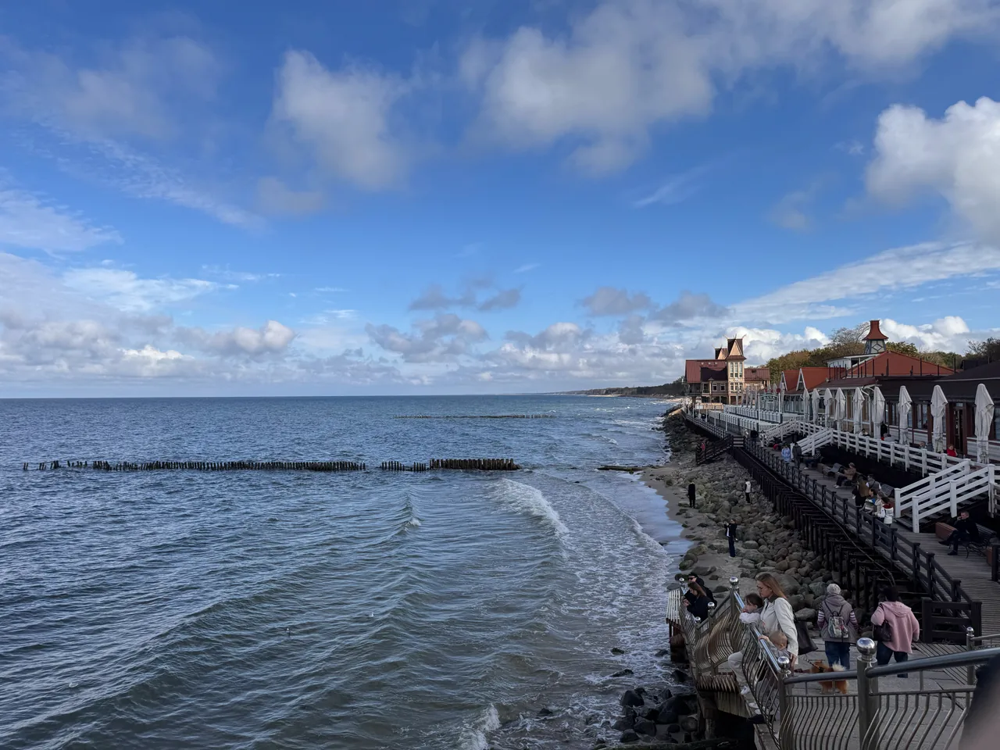
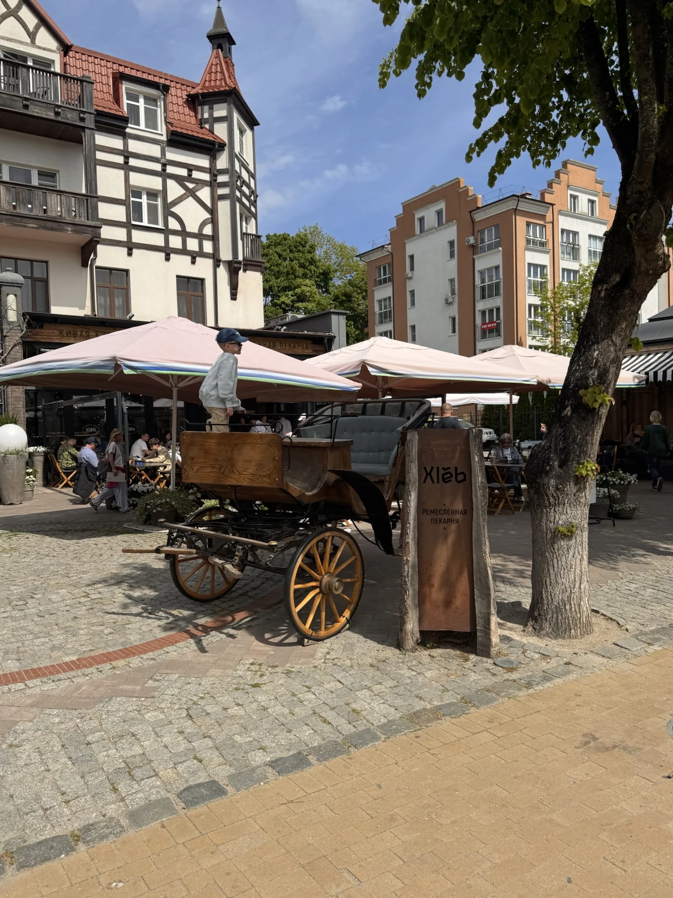
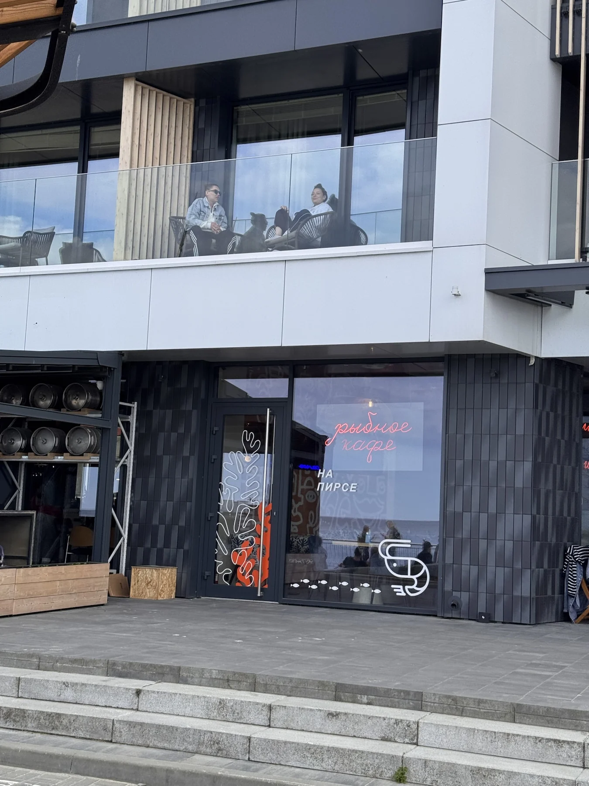

Однодневные маршруты
Зеленоградск
на рыбной волне
Кофе, рыбный обед и море. Три остановки без спешки.
Курортный проспект, обед у пирса и старые улочки. Всё рядом — между остановками можно идти пешком.



- С остановками
- ≈ 2 ч 24 мин
- Пешком между местами
- 688 м
- На вкус
- 3 остановки
Маршрут дня
Три настроения, один приморский город.

КофеХлеб
Начните день с кофе на Курортном проспекте.Начните день с кофе на Курортном проспекте.
Что попробовать и о месте
У Курхауса есть короткая остановка для хлеба и кофе. На фасаде — вывеска ремесленной пекарни. Можно зайти здесь, прежде чем снова выйти на Курортный проспект.
О месте подробнее →Проверено 2026-10-02. Источник ↗

Рыбный обедРыбное кафе на пирсе
Оставьте время на рыбный обед и вид на море.Оставьте время на рыбный обед и вид на море.
Что попробовать и о месте
На вывеске — «Рыбное кафе на пирсе», на сайте — «Бранч на море». Это одна остановка у променада: завтрак или рыба, а дальше — линия берега. Перед выходом загляните в меню.
О месте подробнее →Часы работы: Пятница–воскресенье 09:00–21:00. Проверено 2026-10-02. Источник ↗
От предыдущего места · ≈ 4 мин пешком · 276 м
 Десерт и город
Десерт и городТелеграф
Продолжите знакомство с балтийской кухней в старом городе.Продолжите знакомство с балтийской кухней в старом городе.
Что попробовать и о месте
- Килька пряного посола
- Балтийская уха
- Литовские цеппелины
На Курортном проспекте Балтика становится обедом. На вывеске — «Телеграф», в снятом нами меню — килька и уха. Хорошая остановка между старым городом и морем.
О месте подробнее →Часы работы: Ежедневно 12:00–23:00. Проверено 2026-10-02. Источник ↗
От предыдущего места · ≈ 5 мин пешком · 412 м
Если нет столика
Идеи для того же дня.